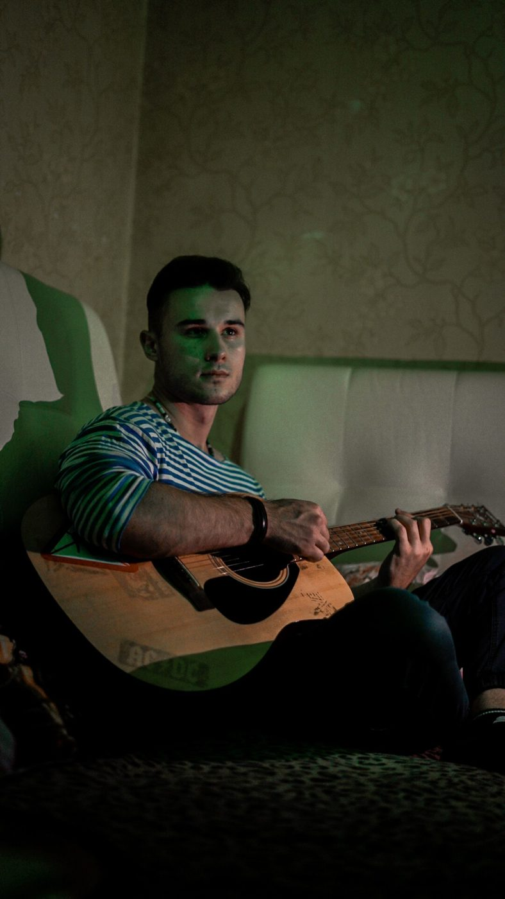
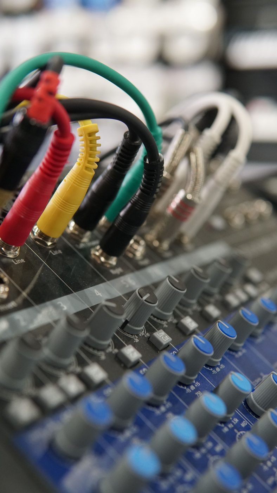

Вокал в любом жанре, акустическая гитара, кавер, озвучка и подкаст — всё это пишется в той же студии и по тому же часу записи.

Нас чаще всего ищут как студию для рэпа — и да, хип-хоп у нас основной жанр. Но микрофон и обработанная комната не знают, что именно в них записывают. Всё, что перечислено ниже, пишется в той же студии, по тому же прайсу и в тот же час записи.
Поп, рок, R&B, шансон, авторская песня — разницы в процессе нет. Есть бит или минус, есть текст, есть микрофон. Меняется только подача и то, как трек потом сводится.
Конденсаторный микрофон снимает не только голос. Акустическую гитару пишем тем же микрофоном с другой постановки — получается живой инструмент в треке, а не библиотечный сэмпл. Если хочешь спеть под собственную гитару, пишем вокал и гитару отдельными дорожками, чтобы их можно было свести по отдельности.

Один из самых частых запросов у тех, кто не пишет свою музыку. Берёшь минус знакомого трека, поёшь свою версию — на выходе нормальная студийная запись, а не голос в телефон. Такое часто пишут в подарок.
Формат ровно тот же: час записи, чистый голос без комнатного эха, чистка и обработка на этапе сведения. Для озвучки видео, рекламного ролика или выпуска подкаста этого достаточно — телефонная запись рядом не стоит.
Короткая запись голоса, оформленная под музыку. Занимает меньше часа и стоит дешевле любого трека.
Цены не зависят от жанра. Час записи — 500 000 ₫. Сведение проекта до 10 дорожек — 2 000 000 ₫, больше 10 дорожек — 3 000 000 ₫. Мастеринг мы не считаем отдельной услугой: трек доводится до финальной громкости в рамках того же сведения.
Если хочется попробовать всё сразу, есть пробный тариф 1 500 000 ₫ — час записи плюс сведение трека до 6 дорожек (до 3 минут), уходишь с готовым файлом.
Напиши в Telegram, что именно хочешь записать, — подскажем, сколько времени на это заложить, и забронируем. Студия на севере Нячанга, работаем ежедневно с 10:00 до 22:00, встретим у входа.